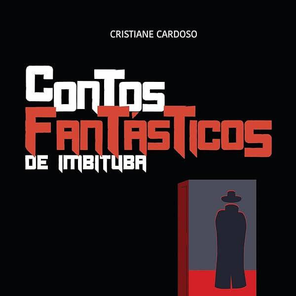
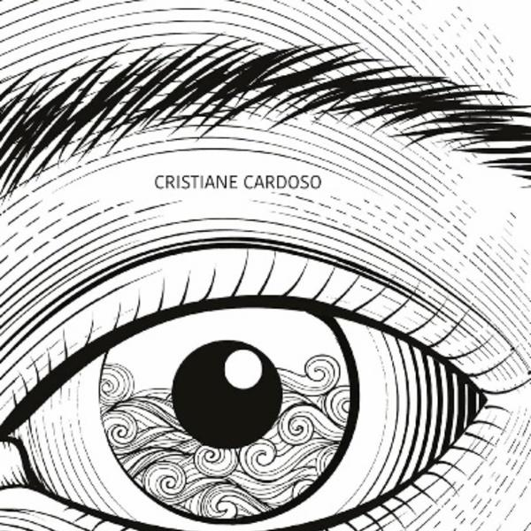
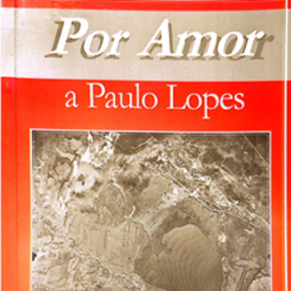
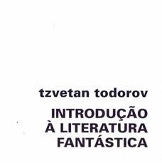
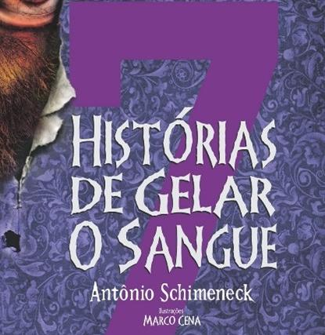
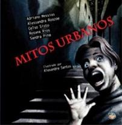
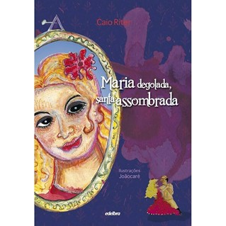
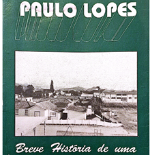

ALVES, Januária Cristina. Abecedário de personagens do folclore brasileiro. São Paulo: Sesc, 2017.
CALVINO, Ítalo. Contos fantásticos do século XIX. São Paulo: Companhia das Letras, 2004.
CARDOSO, Cristiane. Contos fantásticos de Imbituba. Edição da autora, 2021.
CARDOSO, Cristiane. Contos fantásticos de Imbituba 2. Imbituba: Edição da autora, 2021.
CARDOSO, Cristiane. Contos fantásticos de Imbituba 3. Imbituba: Edição da autora, 2022.
CASCUDO, Luís da Câmara. tradicionais do Brasil. São Paulo: Global, 2004.
CASCUDO, Luís da Câmara. Geografia dos mitos brasileiros. São Paulo: Global, 2023.
CASCAES, Franklin. O fantástico na ilha de Santa Catarina. Florianópolis: UFSC, 2015.
FILIPOUSKI, Ana Mariza Ribeiro. A formação do leitor jovem: temas e gêneros da literatura. Erechim: Edelbra, 2009.
GEREMIAS, Cacildo Antônio. Por amor a Paulo Lopes. Paulo Lopes: [s.n.], 2003.
MACHADO, Manoel Venâncio. Paulo Lopes: breve história de uma terra e de seu povo. Florianópolis: Lunardelli, 1993.
OLIVEIRA, Laércio Vitorino de Jesus (Org.). Memória: um patrimônio irrenunciável: comunidades do distrito de Ribeirão Pequeno da Laguna. Palhoça: Editora Unisul, 2010.
RAMOS, Anna Claudia. Lendas urbanas. São Paulo: DCL, 2009.
RITER, Caio. Maria degolada, santa assombrada. Erechim: Edelbra, 2010.
ROSCOE, Alessandra et al. Mitos urbanos. São Paulo: Mundo Mirim, 2011.
SCHIMENECK, Antônio. 7 histórias de gelar o sangue. Porto Alegre: BesouroBox, 2013.
TODOROV, Tzvetan. Introdução à literatura fantástica. São Paulo: Perspectiva, 2017.
BITTENCOURT, Fernando. Entrevista concedida a Gabriel Silveiro Linck. Santa Catarina, 2024. FERNANDES, André da Rosa. Entrevista concedida a Henrique Ribeiro Fernandes. Santa Catarina, 2025. FERNANDES, Karla Pereira. Entrevista concedida a Henrique Ribeiro Fernandes. Santa Catarina, 25 out. 2025. RIBEIRO, Jucemar Ferreira. Entrevista concedida a Sabrina Duarte Rosa. Santa Catarina, 2025. BRUM, Gabriela. Entrevista concedida a Tatiana Ribeiro e Maria Ângela Reis. Santa Catarina, 2025.

Cristiane cardoso

Cristiane cardoso
Cristiane cardoso

Cacildo Antônio Geremias
Januária Cristina Alves
Franklin Cascaes
Luís da Câmara Cascudo
Ana Mariza Ribeiro Filipourski e Diana Maria Marchi
Anna Claudia Ramos
Luís da Câmara Cascudo

Tzvetan Todorov

Antônio Schimeneck

Alexandre Santos

Caio Riter
Italo Calvino

Manoel Venâncio Machado